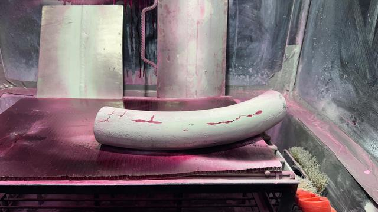
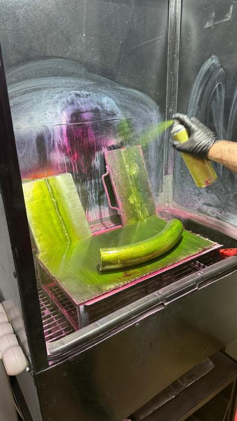
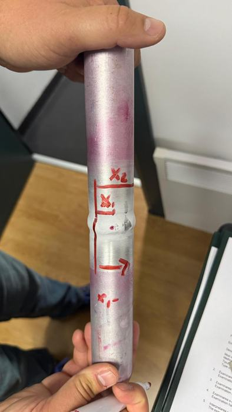
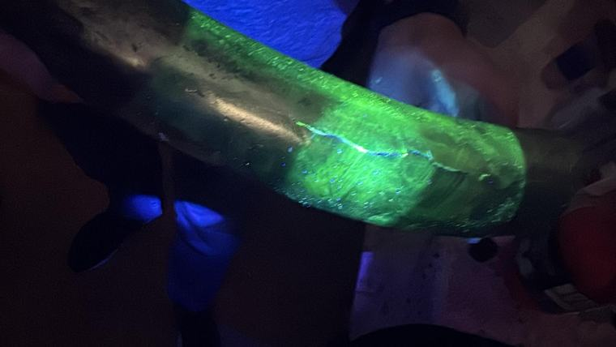

Metoda scoate la vedere fisurile și porii deschiși la suprafață, inclusiv pe cei prea fini
pentru a fi văzuți cu ochiul liber. Funcționează pe orice material neporos — și acolo unde
metodele magnetice nu se pot aplica, cum sunt inoxul austenitic, aluminiul sau cuprul.

În echipă avem personal autorizat pentru examinări nedestructive prin metoda PT
— lichide penetrante. Executăm examinări la îmbinări sudate și la alte produse metalice, în
atelier sau pe șantier, fără să afectăm piesa examinată.
Ce pune în evidență
Fisurile — de sudare, de la contracție, de oboseală sau apărute în exploatare;
Porii și suflurile care ajung la suprafață;
Lipsa de topire și de pătrundere, atunci când sunt deschise la suprafață;
Suprapunerile și crestăturile de la marginea cordonului;
Discontinuitățile din materialul de bază — laminare deschisă, fisuri în zona influențată termic.
Ce nu poate face metoda: nu detectează defecte închise în volumul sudurii —
pentru acelea sunt necesare metode volumetrice (radiografiere sau ultrasunete), pe care nu le
prestăm. De asemenea, nu se aplică pe materiale poroase sau pe suprafețe pe care nu le putem
curăța până la metal. Examinarea cu penetranți se face dupăexaminarea vizuală (VT), nu în locul ei.
Două variante, după piesă și condiții
Cu contrast de culoare — penetrant roșu pe developant alb, examinat la lumină obișnuită. Se poate face oriunde, inclusiv pe șantier;
Fluorescentă — penetrant care strălucește sub lumină ultravioletă, în încăpere întunecată. Vede indicații mai fine, dar cere condiții de laborator.
Cum se desfășoară examinarea
Pregătirea suprafeței — curățire de zgură, oxizi, grăsimi și vopsea, apoi degresare; de calitatea acestei etape depinde tot restul;
Aplicarea penetrantului și menținerea timpului de penetrare cerut, în funcție de material și de temperatură;
Îndepărtarea excesului de penetrant, controlat, fără să spălăm și ce a intrat în discontinuități;
Aplicarea developantului și așteptarea timpului de developare, în care indicațiile ies la suprafață;
Examinarea și evaluarea indicațiilor — le separăm pe cele relevante de cele false și le măsurăm;
Curățirea finală a piesei și întocmirea raportului.
Cum arată în practică

Aplicarea penetrantului. Suprafața trebuie curățată până la metal înainte — de etapa asta depinde tot restul.

Evaluarea: indicațiile se marchează pe piesă, se numerotează și intră în raport, cu poziția și dimensiunea fiecăreia.

Indicație fluorescentă sub ultraviolete. Linia luminoasă urmărește fisura; lungimea ei se măsoară și se compară cu criteriul de acceptare.
Ce primiți
Raportul de examinare cu lichide penetrante, semnat de personalul autorizat care a executat examinarea;
Datele examinării — produsele folosite, timpii de penetrare și de developare, temperatura suprafeței;
Schița îmbinărilor examinate, cu poziția și dimensiunea indicațiilor relevante;
Fotografii ale indicațiilor găsite;
Concluzia de admis/respins față de nivelul de acceptare aplicat lucrării.
De ce se cere împreună cu VT
Examinarea vizuală stabilește dacă sudura e corect executată ca formă și dacă are defecte
vizibile; penetranții confirmă dacă în zonele care par bune există fisuri fine. Cele două se
completează, iar la lucrările în domeniul ISCIR sunt de regulă cerute în această succesiune prin
procedura de sudare. Le putem presta pe amândouă, în aceeași deplasare — vedeți și pagina de
examinare vizuală.
Ce trebuie să ne trimiteți
Materialul și grosimea pieselor, tipul îmbinărilor și procedeul de sudare folosit;
Standardul și nivelul de acceptare cerut prin proiect sau prin caietul de sarcini, dacă îl cunoașteți;
Numărul de îmbinări și procentul supus examinării;
Unde se face examinarea și dacă există posibilitatea de curățire a suprafețelor la fața locului;